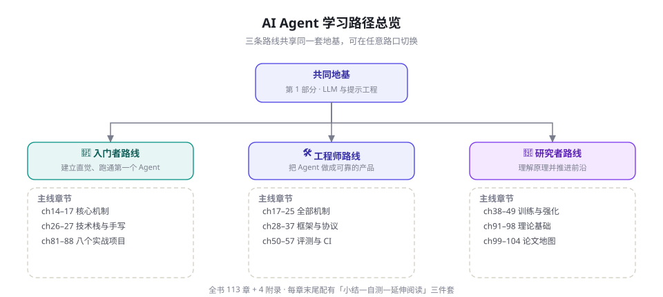

如何使用本书：三条学习路径与阅读指南
全书 113 章不必从头读到尾。本章给你一张地图：三条按角色设计的学习路径、章节之间的依赖关系、五个可勾选的能力里程碑、一套被验证有效的自学节奏，外加环境准备与资源调度指南。花 15 分钟读完，能为你省下几十小时的迷路时间——这一章本身，就是本书方法论的一次应用：先建地图，再赶路。
全书的骨架：五层递进
13 个部分按「认知顺序」而非「学科分类」编排，形成五层递进：
- 地基（第 1 部分）：LLM 如何工作、提示工程、API 工程。即使你用过 LLM API，也建议速读——后面所有章节假设你掌握这里的 vocabulary。
- 机制（第 2 部分）：Agent 的解剖学与生理学——循环、工具、规划、记忆、RAG、反思、多智能体。这是全书的心脏，所有角色都应该完整阅读。
- 工程（第 3、5、8 部分）：框架选型、评测体系、可观测性与规模化。把「能跑的 Demo」变成「敢上线的系统」。
- 进阶（第 4、10 部分）：训练与强化学习、理论基础。回答「模型为什么能做到、怎样才能更强」。
- 周边与实战（第 6、7、9、11-13 部分）：安全、多模态、八个实战项目、论文库、项目库、面试题库。按需取用。

三条学习路径
路径 A · 入门者：建立直觉（约 3-4 周）
目标：能独立解释「Agent 是什么、怎么工作」，并亲手跑通三个真实可用的 Agent。
| 周次 | 章节 | 产出 |
|---|---|---|
| 第 1 周 | 第 1-3 章 + 第 6 章（提示工程） | 读懂并运行第 1 章的 30 行 Agent |
| 第 2 周 | 第 14-17 章（Agent 概念、循环、ReAct、工具） | 改造第 27 章的最小 Agent，接入自己的工具 |
| 第 3 周 | 第 20 章（RAG 入门）+ 第 81 章（实战项目①） | 上线一个个人知识库问答 Agent |
| 第 4 周 | 第 26-27 章（技术栈、手写 Agent）+ 第 82 章 | 完成第二个项目；能画出 Agent 架构图并解释取舍 |
此路径可以跳过：训练篇、理论篇、安全篇（先收藏，需要时再读）。入门期最大的坑是「教程潜水」：连续看十个小时教程而不写一行代码，会产生 «已经会了» 的错觉。本书为对抗这一点，把每章的自测题都设计成「不跑代码就答不出来」的形式。
路径 B · 工程师：交付产品（约 6-8 周）
目标：把 Agent 做成有评测、有护栏、可观测的生产系统。
- 第 1-2 周：机制篇全读（第 14-25 章），同时用 第 28 章（LangGraph）重写你现有的 Agent。
- 第 3 周：框架与协议（第 26-37 章），按 第 26 章的决策树完成一次正式选型并写下理由。
- 第 4 周：评测（第 50-57 章）。为你的 Agent 建立不少于 100 条的测试集，接入 CI。
- 第 5 周：安全（第 58-65 章）。完成一次对自家系统的注入攻击演练并修复。
- 第 6 周：前沿与工程深化（第 73、76、78-80 章）：长时程、成本、可观测性、规模化。
- 第 7-8 周：对照第 89 章（生产化）与第 90 章（案例研究）复盘自己的系统。
- 工程师路径最大的坑是「框架先行」：还没有想清楚机制就套框架，出了问题既读不懂框架源码也修不好自己的抽象。请务必先完成第 27 章的手写实现再进框架。
路径不是合同：切换与并行的时机
三条路径设计的假设是「一次主要服务一个目标」，但真实学习往往需要切换。值得切换的信号：走路径 A 时连续两章读不懂机制描述——先补第 1 部分；走路径 B 时发现自己只会调框架而说不清原理——回到第 14-19 章重读；走路径 C 时复现实验屡屡失败且看不懂失败——说明工程基本功欠账，去路径 B 的评测与工程章补课。不值得切换的信号：只是因为某章「感觉枯燥」就跳走——枯燥感往往来自「还没有用到它的场景」，标记跳过，等你被真实问题揍到的时候再回来，那章会突然变得好看。
并行也是允许的：工程实践者常见的高效组合是「路径 B 主线 + 每周两小时路径 C 的论文精读」，前者保证产出，后者保证半年后你还有产出。唯一不建议的组合是 A + B + C 同时全速推进——Agent 领域不缺焦虑的全栈初学者，缺的是某一个方向上真正可靠的人。
路径 C · 研究者：推进前沿（约 8-10 周）
目标：建立完整的文献坐标系，能复现关键实验、识别开放问题。
- 先修：第 4-5 章（模型原理）、第 91-92 章（MDP 与 in-context RL 视角）。
- 主线：训练与强化篇（第 38-49 章）→ 每章末尾的论文至少精读两篇；理论篇（第 91-98 章）。
- 文献：第 99 章（阅读方法论）→ 第 100 章（奠基十篇精读）→ 第 101-103 章（机制/训练/安全论文地图）→ 第 104 章（百篇清单作为 checklist）。
- 实操：至少复现一个训练实验（推荐第 43 章的 GRPO 数学推理或第 45 章的 AgentGym 环境）与一个基准评测（第 51 章 SWE-bench-lite 子集）。
- 研究者路径最大的坑是「只读不跑」：论文读了一百篇，一次实验没跑过。该领域的论文实验细节水位参差，只有亲手复现过，你才能分辨「扎实的贡献」与「精致的包装」。
用「周五下午测试」：如果周五下午你更想做出一个东西，走 A；更想让系统变可靠，走 B；更想搞明白为什么，走 C。三条路径在第 2 部分汇合——机制篇是所有人的必修课。
章节依赖关系
本书章节尽量做到「自包含」，但以下依赖较强，建议按顺序：
- 第 15 章（Agent Loop）→ 第 16-25 章：所有机制章节都在 Loop 骨架上讨论。
- 第 20 章（RAG 入门）→ 第 21 章（RAG 进阶）→ 第 81 章（项目①）：检索这条线一以贯之。
- 第 38 章（训练全景）→ 第 39-49 章：训练篇各章共享第 38 章建立的坐标系。
- 第 43 章（RLVR）→ 第 45 章（Agent RL）：理解可验证奖励是理解 Agent RL 的前提。
- 第 50 章（评测方法论）→ 第 51-57 章：所有基准章节使用第 50 章的分类语言。
其余章节可以自由跳读：目录中每章的导语都说明了它回答什么问题，按问题索引即可。
自学节奏：被验证有效的四个习惯
1. 每章「读-跑-改」三遍。第一遍通读建立地图（30 分钟）；第二遍把代码跑起来（1 小时）；第三遍做一处修改再观察行为变化（时间不限）。第三遍学到的最多。
2. 用自测题校准，而不是用「看懂了」校准。每章末尾的自测题能答出 80% 才算过关——「流畅的错觉」是技术阅读最大的坑。
3. 建立你自己的「最小仓库」。跟书同步建一个 GitHub 仓库，每章的代码提交一次。读完本书时，你会拥有一份署着你自己名字的 Agent 工具箱。
4. 追踪一次完整的失败。遇到 Agent 跑偏时，别急着改提示词：先用第 79 章的 tracing 方法看清每一步发生了什么，再归因。这个习惯会让你和 90% 的从业者拉开差距。
进度里程碑：如何知道自己在成长
自学最怕的不是难，而是「不知道自己走到哪了」。给你一份可勾选的能力里程碑，每条都是可外部验证的行为，不是感觉：
认知科学里这叫 retrieval practice（提取练习）：重读产生流畅感，提取才产生记忆。本书自测题、里程碑、读书会互考建议，全部围绕同一原理设计。当你能向别人讲清楚一个机制时，你不仅记住了它，还暴露了自己对它的全部误解——这是最高效的纠错时机。
| 阶段 | 你应该能做到 | 对照章节 |
|---|---|---|
| M1 概念通关 | 向一个不懂技术的朋友，用三分钟和一个比喻讲清楚 Agent 是什么、和聊天机器人差在哪 | 第 1-3、14 章 |
| M2 动手通关 | 不看书写出 100 行以内的工具调用循环，并解释每一行为什么存在 | 第 15、27 章 |
| M3 机制通关 | 面对「它记不住上周的偏好」这类 bug，能给出至少三种机制层面的解决方案与取舍 | 第 19-23 章 |
| M4 工程通关 | 为新需求完成一次框架选型并写出决策依据；为自己的 Agent 建 100 条评测并接入 CI | 第 26、50-57 章 |
| M5 深水区通关 | 读懂一篇 2025 年的 Agent RL 论文并指出其奖励设计的两个潜在缺陷 | 第 38-49、99-104 章 |
经验节奏：M1-M2 一到两周，M3 一个月上下，M4 需要真实项目喂出来，M5 是以年为单位的长期目标。卡住时回到「读-跑-改」——大多数「卡住」其实是「只读了」。
另有一条隐蔽的检验标准：当你开始对书里的某个断言不满意、想自己动手验证时，恭喜——那是从「读者」变成「从业者」的准确信号。本书后续会多次鼓励你质疑它给出的数字与结论，包括这一条。
本书与其他学习资源的分工
本书不替代其他资源，而是给你一张「资源调度图」。官方文档（LangGraph、OpenAI/Anthropic SDK、MCP）永远比任何书新鲜——当你已经知道要查什么时，去读文档；本书负责让你「知道要查什么、为什么」。论文提供第一手证据——第 99 章的阅读方法论会把「读论文」从崇拜行为变成工程流程；当你需要对某个机制较真时，去读论文。课程与视频（如斯坦福 CS329A 等公开课，见第 108 章）适合建立节奏感——它们是「有人陪跑」的学习，本书是「自助餐 + 地图」的学习。社区（GitHub Discussions、论文盯梢工具）提供前沿信号——但请带着第 3 章教你的「拆解习惯」去消费，宣言与证据的区分是你的防波堤。
一个诚实的提醒：不要试图先收藏完所有资源再开始。Agent 领域的资源以周为单位膨胀，「收藏夹学习法」的完成率趋近于零。本书的路径已经做过取舍，跟着走完一条，你的鉴赏力足以自己筛选增量信息。
学习共同体方面，本书仓库的 Discussions 区按章节组织讨论串：每章一个置顶帖，供读者交换运行结果、报错与心得。提问时请附上「你的目标、完整报错、最小复现代码」三件套——这个格式的回复率比「为什么我的代码跑不通」高一个数量级，而这个格式本身就来自第 79 章的可观测性思想。
开始前的环境准备
只需五分钟。本书代码以 Python 为主（少量 TypeScript），依赖极轻：一个能访问 LLM API 的密钥，加两个常用库。推荐用虚拟环境隔离：
# 1. 建立并激活虚拟环境(任选其一)
python -m venv .venv && source .venv/bin/activate # macOS/Linux
python -m venv .venv && .venv\Scriptsctivate # Windows
# 2. 安装本书前半部分所需的库
pip install openai anthropic requests rich
# 3. 设置密钥(任选一家即可开始;第 11 章讲本地模型方案)
export OPENAI_API_KEY="sk-..." # macOS/Linux
setx OPENAI_API_KEY "sk-..." # Windows PowerShell: $env:OPENAI_API_KEY="sk-..."
# 4. 验证:第一个对话
python -c "from openai import OpenAI; print(
OpenAI().chat.completions.create(model='gpt-4o-mini',
messages=[{'role':'user','content':'用一句话介绍你自己'}]
).choices[0].message.content)"没有付费 API 也可以完成大部分学习：第 11 章介绍用 Ollama 运行本地开源模型（Qwen、Llama 系列），第 88 章的项目完整演示本地化方案；差别主要是响应质量，不是概念理解。
三个高频问题
Q：需要先学完机器学习吗？不需要。本书的路径设计假定你从应用层进入；训练篇（第 38-49 章）的入口有最小先修包。反过来的建议倒是有：如果你最终要做训练，应用层的直觉会帮你提出更好的研究问题。
Q：书里的框架版本过时了怎么办？本书对快变内容标注时间戳，并在每章给出「稳定思想」与「易变细节」的区分。框架会过时，但「为什么此时需要状态机」「MCP 解决什么问题」这类判断力不会。遇到 API 变动，以官方文档为准，书的机制讲解仍然有效。
Q：可以跳过某些章吗？可以，但请保留两条底线：第 15 章（Agent Loop）是全书引用最密的一章；第 50 章（评测方法论）是工程篇的通行证。其余章节按需取舍，目录导语会告诉你每章回答什么问题。
版式与符号约定
| 元素 | 含义 |
|---|---|
| 💡 实践建议 | 来自生产一线的经验做法 |
| ⚠️ 常见坑 / 🚨 安全警告 | 高频错误与可能造成损失的操作 |
| 🔬 深入细节 | 可跳过的进阶讨论，不影响主线 |
| 📄 论文速览 | 两三句话说清一篇关键论文的问题/方法/结果 |
| 图 N-M / 表 N-M | 编号按章，如「图 16-1」为第 16 章第 1 张图 |
等宽字体 | 代码、文件名、术语原文 |
本书网站支持 深色/浅色主题（右下角切换）、全文搜索（按 / 唤起）、以及单页打印版（页脚入口，适合离线与打印）。另外三个小功能值得知道：正文中的站内链接会把相关章节连成网——遇到不认识的术语，点击第一处链接通常五分钟内可以补齐上下文；每章页内目录在宽屏右侧自动生成，长章节可随时跳转；搜索框支持多关键词（空格分隔），会在全书正文与标题中求交集。
与代码仓库配合的两种用法
用法一：跟书自建（推荐初学者）。不要克隆任何「配套代码仓库」——本书刻意不提供一键可跑的全套代码，因为自己敲出来的 bug 才是最好的老师。每章代码块都是自包含的，建一个自己的 agent-lab/ 目录，按章建立 ch15/、ch20/……子目录，把跑通的代码连同你改坏的版本一起提交。学期结束时，这个仓库就是你个人能力的最好证明，比任何证书都有效。
用法二：审计本书（推荐怀疑论者）。仓库的 tools/ 目录包含全书自身的构建与质检系统：看看 check_chapter.py 的十五条硬指标，看看 figkit.py 如何保证 80 多张图视觉一致，看看本书的「质检闸门 + 多身份盲审」流水线如何运转。把这本书当作一个 Agent 应用来审计，你会同时学到书的内容和书的制作方式——后者本身就是一次多智能体系统的完整案例教学（对应第 24、57 章）。
本书的章节粒度（每章 20-40 分钟）是按「一次读书会一章」设计的。实践中效果最好的组织方式是轮值主讲制：每人主讲一章的「跑与改」，把自测题改成现场互考。如果用于课程，建议按「机制篇精读 + 一个实战项目 + 一篇论文精讲」组合成一个 16 学时的模块，三个模块可以覆盖一学期。
给教学者两条额外的实操建议。其一，把评测当作作业的默认交付物：与其布置「实现一个 XX Agent」，不如布置「实现一个 XX Agent，附带 50 条评测与失败分析」——前者会收获十个一模一样的 demo，后者才会暴露学生真实的理解深度，而且评分有据可依（第 13 章）。其二，允许并鼓励学生在自测题下「出题互考」：出好一道题需要比答对一道题更高层的理解，而批改者（你）可以只审题不答题，工作量可控。
版本与时效
Agent 领域的「半衰期」很短：框架 API 以月为单位变化，模型以周为单位迭代，但机制与设计思想的生命周期长得多——ReAct 范式（2022）今天依然是绝大多数 Agent 的骨架，RLHF 的思想（2017-2022）撑起了之后所有对齐技术。本书因此做一个明确的分层：
- 稳定层（缓慢失效）：机制、理论、评测方法论、安全原理——这些内容以「年」为单位演化；
- 快变层（快速失效）：具体框架版本、模型名称、价格数字、榜单排名——我们标注了时间戳（「截至 2026-09」），引用时请注意核对最新状态。
开源仓库的 CHANGELOG.md 记录每次实质更新；重大修订会发布新的版本号。发现任何技术错误，欢迎在 GitHub 提 Issue——对一本「活的书」来说，读者反馈是最宝贵的训练信号。
本章小结
- 全书五层递进：地基 → 机制 → 工程 → 进阶 → 周边与实战；机制篇（第 14-25 章）是所有人的必修课。
- 三条路径：入门者 3-4 周建立直觉，工程师 6-8 周交付产品，研究者 8-10 周建立文献坐标系。
- 有效节奏 = 「读-跑-改」三遍法 + 自测题校准 + 自己的代码仓库 + 追踪一次完整失败。
- 内容分稳定层与快变层；引用快变层数字时注意时间戳。
- 五个里程碑（概念/动手/机制/工程/深水区）给出可外部验证的成长标尺；卡住的第一个假设永远是「只读了没跑」。
自测题
- 你的角色最对应哪条路径？写出你未来 4 周的章节计划（具体到章号）。
- 哪几组章节之间存在强依赖？为什么「机制篇」被放在训练篇之前？
- 「读-跑-改」中的「改」为什么比「读」更重要？用行为学派一个概念解释。（提示：观察-反馈循环。）
- 你的环境准备好之后，跑通第 1 章的最小 Agent。如果调用报 429 错误，第几章会教你处理？
- 为你的仓库写一份 README 第一段：你要做一个什么 Agent，给谁用，成功标准是什么。
- M1-M5 里程碑中，你现在处于哪个？用它反推你未来两周应该读哪些章、跑哪些代码。
- 「先收藏完所有资源再开始」为什么注定失败？用本书提到的哪个机制可以解释这种行为的失效？（提示：没有反馈循环的学习不构成闭环。）
进一步阅读
- 如果你想先看看「终点」长什么样：直接翻到第 90 章看四个顶级产品的拆解，再回来按路径学习——知道终点会让路径上的每个选择更有意义。
- 如果你偏好视频入门：第 108 章给出了公开课程清单与观看顺序建议。
参考文献与延伸阅读
- Yao, S. et al. (2022). ReAct: Synergizing Reasoning and Acting in Language Models. ICLR 2023. arXiv:2210.03629
- Ouyang, L. et al. (2022). Training language models to follow instructions with human feedback. NeurIPS 2022. arXiv:2203.02155
- Anthropic (2025). Effective context engineering for AI agents. anthropic.com/engineering
- 本书仓库. CHANGELOG.md 与 CONTRIBUTING.md. github.com/ai-agent-cookbook
- Ahn, M. et al. (2024). Large Language Models for Mathematical Reasoning: Progresses and Challenges.（学习方法的迁移研究示例）arXiv:2402.00175
- Karpicke, J. & Roediger, H. (2008). The Critical Importance of Retrieval for Learning. Science.（「自测优于重读」的认知科学依据）
如何引用本书
学术写作或对外材料中引用本书，建议注明版本与章节锚点，例如：「AI Agent Cookbook, v1.0, Ch. 23 (Context Engineering), 2026, github.com/ai-agent-cookbook」。章节锚点在所有平台稳定不变；快变数据请附上你访问的月份。翻译与再分发遵循 CC BY-SA 4.0——署名 + 相同方式共享，商业使用同样允许。